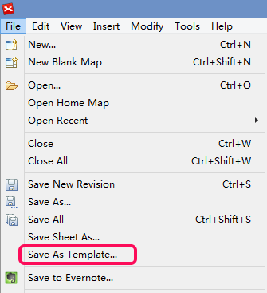

Template
The template in XMind forms the structure of the map, and is saved as a .XMT file. There are 22 basic templates for your reference, the Default Blank Mind Map template, To-do List, Six Thinking Hats, Travel Plan, Org Chart, Project Plan, Project Status report, Projects Dashboard, Neogotiaion of Sale, Preparation for a Conversation, Marketing template, and etc.
To use template:- Select "File -- New" from menu
- In the coming dialog, double-click your preferred template

Build your own template:
- Build a map with a structure, and add some basic subtopics
- Set your preferred styles, such wallpaper, topic font or line appearance.
- Click "File - Save as Template..." from menu.
- Select the path and save your template.

Add your templates into XMind:- Select "File -- New".
- Click "Add template" in the coming dialog, and select your template
- Then, XMind will add it into the template so that you can create a mind map with it!